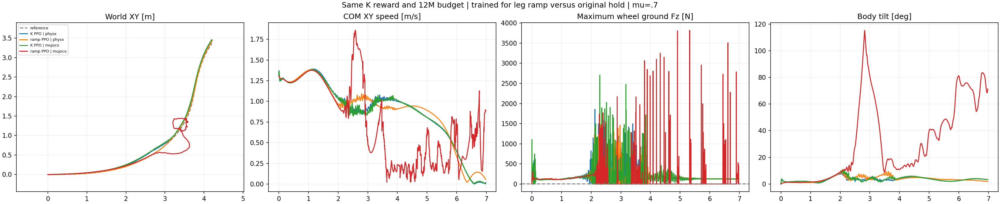

The ramp-trained policy does not pass the original complete nominal task in both engines. Better individual metrics or completed learning do not establish continuous stable-contact turning.
Four actual6.98s episodes: original K and ramp-trained K, each in native PhysX and native CPU MuJoCo at mu0.7. Each policy has one actor across engines. Rendering replays original native poses with opaque meshes, body/wheel/velocity headings, one common fixed relative camera distance and fixed world angles, translation-only following and shared world-XY scale. No pose smoothing, root correction, resimulation or inferred contact is used.
| Cell | Core XY RMSE(cm) | Core speed(%) | Core beta RMSE(deg) | Any-wheel support(%) | Longest gap(ms) | HF/original | Core max tilt(deg) | Failed original gates |
|---|---|---|---|---|---|---|---|---|
| K PPO | physx | 8.16 | 98.10 | 3.77 | 89.52 | 45.0 | 0.614 | 9.73 | any_wheel_every_physical_sample, longest_no_support_gap |
| ramp PPO | physx | 5.34 | 98.24 | 2.78 | 92.80 | 40.0 | 0.720 | 10.86 | any_wheel_every_physical_sample, longest_no_support_gap, core_HF_reduction |
| K PPO | mujoco | 9.10 | 97.78 | 4.31 | 87.86 | 65.0 | 0.793 | 10.52 | any_wheel_every_physical_sample, longest_no_support_gap, core_HF_reduction |
| ramp PPO | mujoco | 36.62 | 85.52 | 65.87 | 38.24 | 572.5 | 0.896 | 115.30 | core_xy_rmse, core_xy_peak, whole_xy_rmse, whole_xy_peak, core_speed_retention, core_reference_beta, any_wheel_every_physical_sample, longest_no_support_gap, core_HF_reduction |
Core1.44–4.00s, whole-reference0–6.96s, support0.02–6.96s. Retained gates: core/whole XY RMSE≤0.15m and peak≤0.30m; core speed ratio0.95–1.10; intended nonzero reference-beta RMSE≤10deg; core angularXY10–100Hz RMS≤0.7 of original same-engine400Hz PPO; max wheel normal force>5N every native2.5ms sample, support fraction100%, longest gap0. Single-wheel support and alternating support are allowed. No absolute height or geometric-flight gate is introduced. Body integrity and within-turn speed profile matter; support after falling and reduced HF after stopping do not establish success. N=1 is not robustness qualification.
K PPO | physx. Upright in all four inspected stills. At2.24s both displayed wheel loads are0N and0/8 preceding native samples bear load; at3s only1/8 sample bears load, ending with right884N. Both wheels bear load at4s and6.96s.
ramp PPO | physx. Upright in all inspected stills and closer recorded XY tracking. At2.24s both displayed loads are0N and0/8 samples bear load; at3s the left wheel bears125N with8/8 supported substeps. At4s and6.96s both wheels bear load. Improved aggregate support and smaller XY error do not remove the40ms maximum gap or the failed0.7 HF gate.
K PPO | mujoco. Upright in all inspected stills. At2.24s both displayed loads are0N and only1/8 preceding samples bears load. Later inspected stills show both-wheel loading. The original support interruptions and HF gate failure remain.
ramp PPO | mujoco. Upright at2.24s with tilt11.2deg and6/8 supported samples. At3s the body has collapsed to height0.221m and tilt81.1deg with zero wheel loads; persistent nonwheel-ground force begins3.045s. At4s the body is low at0.331m despite root tilt10.8deg, with only1/8 supported sample and current loads0N. At6.96s it is tilted68.5deg,2.355m off-reference and moving0.87m/s while the reference is stopped; left151N and7/8 supported samples do not establish recovery or success.

This is a PhysX-trained, closed-loop transfer comparison. Native engine differences change later observations and policy actions; it does not isolate solver-only error or establish a general controller ranking.
The new actor is trained from scratch for512×24×1000=12288000 transitions, with the same seed42 initial network, K contact formula and external+0.4, remaining14 reward terms, beta+2, action-rate−0.5, PD500/10, original DC motor limits, observations, reference, rigid cylinders and native friction. Startup frictionDR[0.3,1.2], encoder bias, COM perturbations and pushes retain their original recipe. Validation has fixed mu0.7, no DR and no observation noise.
At50Hz the actor supplies six desired leg position actions and two wheel efforts. The six processed leg targets now move over eight actual400Hz physical applications, ending exactly at the desired target. Wheel efforts retain their hold. At each world's reset, the first application starts from measured native joint positions instead of carrying an old episode command. The policy observes the original raw previous action; no actor or observation filter is added. This is training for changed command execution, not evidence for a new reward formula alone.
The earlier frozen-policy ramp worsened support89.52% to86.60%. It was not presented as a fix. This new matched-budget experiment tests adaptation during learning. PhysX uses the same GPU runtime as training; CPU MuJoCo applies the same fractions and endpoints before its original DC motor calculation. All2792 actual desired/applied targets and held wheel efforts are recorded. Independent reconstruction checks the raw action mapping, reset start, fractions, endpoints and native motor torque envelope; full differences and declared0.005Nm/2e-5 torque-check tolerance appear in the JSON.
The first PhysX evaluation was rejected before any physical rollout because the training-only contact-reward collector checked the legacy evaluator's different beta-module source. Its process returned0 during headless cleanup, but the continuation rejected the missing completion artifacts. Training and the completed actor were retained. The repaired evaluation uses the same target-ramp runtime with a read-only native-counter adapter, preserving the original recorder, reward lifecycle and physics steps. The original failed source/status/log files remain in the completed collection; the two accepted episodes live in a separate nominal directory. No validation outcome or reward weight was used to select a replacement actor.
The original18 CPU tests and native32-environment smoke passed before formal learning; the repaired evaluation interface passes20 CPU checks, including use of the unchanged training ramp with the original native evaluation clock. The CPU-only smoke execution additionally verified all2792 physical motor computations, but is excluded from this formal task comparison. Formal normalized-actor export, exact budget, initial-network identity and live ramp/contact audits were checked on the execution host. The completed evidence collection rehashed final actor/checkpoint files there and excluded their bytes, model assets, credentials and native libraries.
All350 frames decoded, native metrics were independently recomputed, common fixed cameras verified and stills2.24/3.00/4.00/6.96s inspected. Full manual video playback is not claimed. All owned training and nominal evaluation jobs are terminal. No friction sweep or validation tuning was performed. Dated launch/smoke evidence remains unchanged.
Native metrics and independent motor audit · Completed execution-file hashes · Formal training/export proof · Both native episodes · Decode/camera/metric checks · Actual still review.
Frozen protocol and acceptance · Trainer · GPU runtime · Same-execution native evaluator · Analyzer · Renderer. The exact launch records retain existing asset/dependency arguments. Offline analysis and replay require the locked reference and original local visual assets; they load no actor or weights.